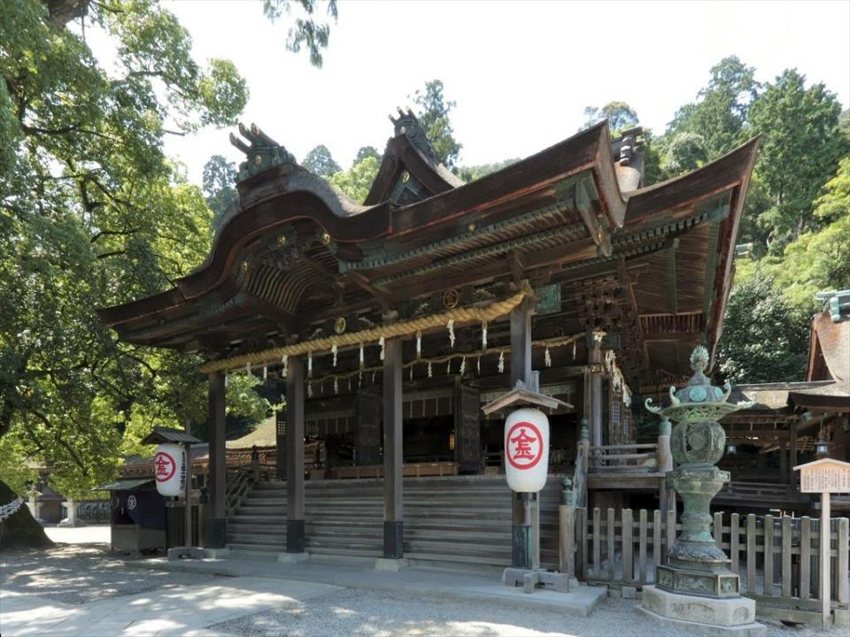
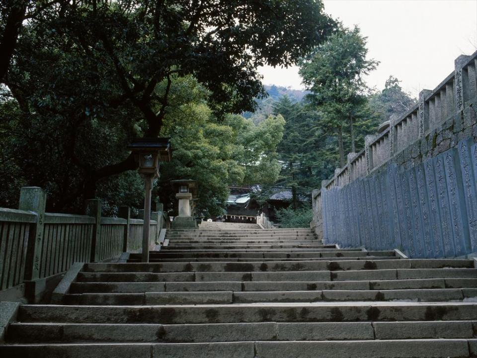
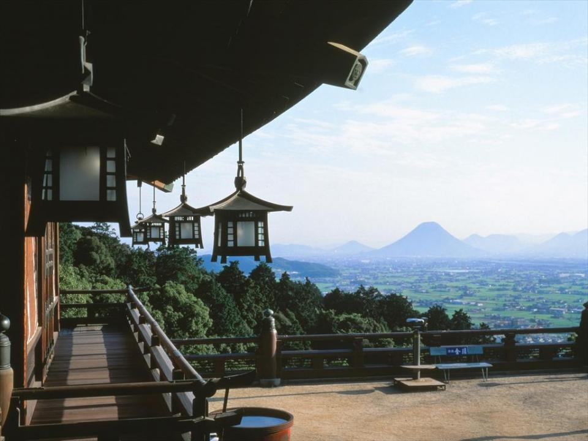
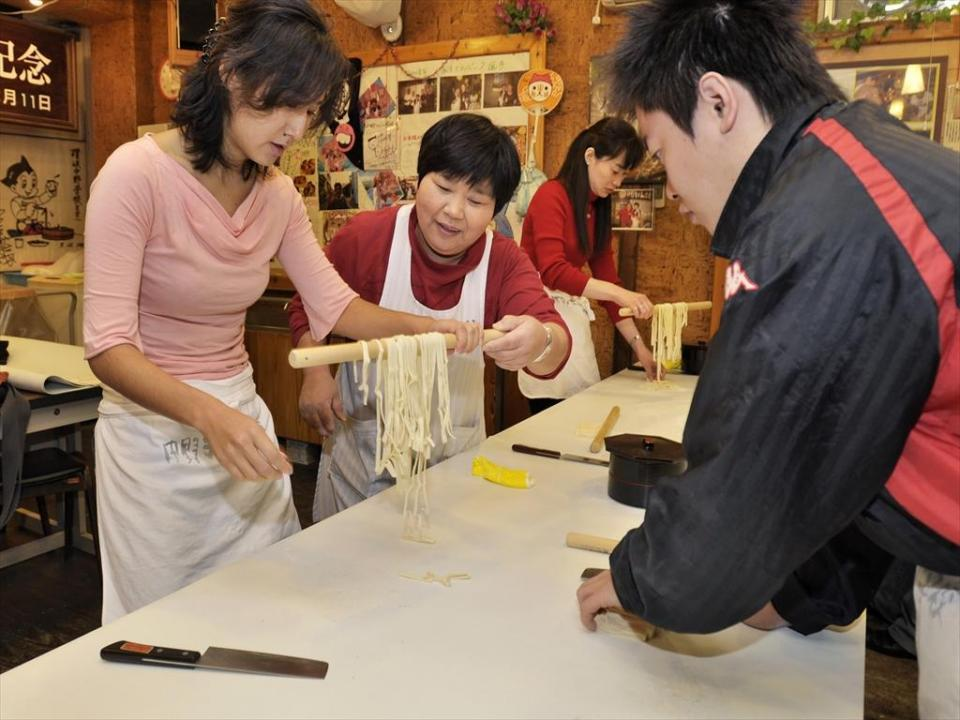

御本宮からの眺めは絶景！香川の旅の王道"こんぴら"を満喫
御本宮からの眺めは絶景！香川の旅の王道"こんぴら"を満喫

「さぬきのこんぴらさん」で親しまれる金刀比羅宮は、映画のロケ地としてもたびたび登場する四国を代表する観光スポットです。香川県の中西部、琴平山（象頭山）の中腹に鎮座する神社で、江戸時代、こんぴら参りは庶民の一生に一度の憧れとして大変にぎわいました。
当時の風情が漂う石段の参道には、重要文化財の建築物など見どころも点在し、今でも年間約300万人が訪れています。参道や周辺に多数軒を連ねるうどん店や、おみやげ屋めぐりも楽しく、うどんの手打ち体験もできます。山麓にはこんぴら温泉郷があり、宿泊してゆっくり過ごしたいエリアです。
785段の石段を登って金刀比羅宮御本宮へ。こんぴら参拝登山バスも発着

JRと"ことでん"（高松琴平電気鉄道）の琴平駅から、琴平山を仰ぎながら歩いて表参道へ。御本宮まで785段、奥社までは1,368段という、こんぴら参り名物の長い石段の１段目はここからスタートします。左右に立ち並ぶみやげ店などをのぞきながら、113段にある一之坂鳥居へ。ここをくぐると一ノ坂。急な石段が神域となる365段目の大門まで続きますが、二層入母屋造の立派な大門は目を見張り、振り返れば眼下に讃岐平野が望め、疲れが吹き飛ぶはず。
365～431段の桜馬場には、春に桜が美しく咲きます。俳諧師の小林一茶がこんぴら参りをしたときに詠んだ句碑や、飼い主の代わりに参拝した"こんぴら狗"がモチーフの銅像を見たり、595段の祓戸社と火雷社など途中にある社を拝礼したりしつつ歩きましょう。642段の賢木門をくぐり、652段～785段の御前四段坂の急な石段を登りきれば御本宮です。
石段はこんぴら参りの醍醐味のひとつですが、麓から本宮へはこんぴら参拝登山バス「しあわせ号」が1時間ごとに1日11便が発着（1名からの予約制でone way510yen、5名以上で貸切可）。石段を登らなくて済むので、小さな子どもやお年寄りが一緒の家族旅行でも、安心して御本宮へ参拝ができます。
御本宮からは讃岐富士や瀬戸大橋まで遠望できるかも！
参道にも見どころいっぱい

金刀比羅宮は「海の神様」として知られていますが、航海の安全や豊漁祈願にとどまらず、五穀豊穣、商売繁昌、病気平癒など、さまざまな御利益があると古くから信仰されてきました。二拝二拍手一拝の拝礼後は、神札授与所で幸福の黄色いお守りも手に入れたいところ。御本宮には展望台もあり、海抜251mからの風景も圧巻です。天気がよければ、讃岐富士や瀬戸大橋まで遠望できます。時間に余裕があれば、1,368段の奥社まで足をのばしましょう。
帰りは、天保時代の意匠が凝らされ重要文化財にも指定される「旭社」や、江戸時代の絵師でyen山派の祖と名高いyen山応挙のすばらしい障壁画を鑑賞できる「書院」、明治38年築の和洋折衷の建物に十一面観音立像などを陳列する「宝物館」、日本近代洋画を切り開いた高橋由一の油絵を展示する「高橋由一館」、創業100余年の「資生堂パーラー」が手掛けるカフェ＆レストラン「神椿」などにも立ち寄ってみてください。
なお、書院前庭では5月5日と7月7日、12月下旬に、平安装束をまとった鞠足（神官）たちが優雅に蹴鞠を奉納する、なんとも古式ゆかしい伝統行事を見ることができます。
こんぴらはうどん屋の発祥地。手打ち体験を楽しみ、温泉で疲れを癒やそう

また、こんぴらは「うどん屋発祥の地」ともいわれ、参道や山麓には約400年前創業の老舗「虎屋旅館」の建物を利用した「虎屋」をはじめ、名店の数々がそろいます。うどん店などを経営する創業約100年の中野屋が手掛ける「中野うどん学校」では、うどんの手打ち体験（1人1500yen、2名以上で要予約、写真はイメージです）が人気。友だちやカップル、家族で体験すれば、すてきな思い出になることでしょう。
一日たっぷり観光を満喫したら、こんぴら温泉郷の温泉宿の日帰り湯を利用して疲れを癒やしたいもの。もちろん、宿泊もおすすめです。